● DETECTADO
Fusarium sp.
9,34 × 10³Valor apresentado no laudoO resultado indica detecção na amostra analisada.
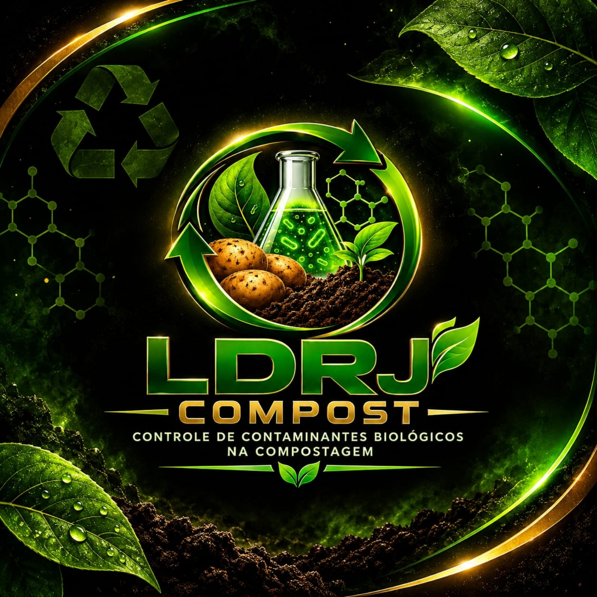
LDRJ COMPOSTUma proposta de sistema integrado de bioconversão por mosca-soldado-negra e compostagem convencional para o aproveitamento de resíduos agroindustriais.
Na Fazenda Água Santa, em Perdizes–MG, as atividades de cultivo de batata e criação de bovinos geram resíduos orgânicos que precisam ser tratados e aproveitados com responsabilidade.
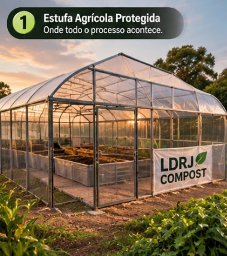
Resíduos de batata e esterco bovino apresentam características diferentes e exigem planejamento para seu tratamento.
A presença de microrganismos de interesse fitossanitário torna importante investigar a qualidade do composto produzido.
A proposta busca integrar etapas de tratamento para valorizar os resíduos e contribuir para um processo mais organizado.
Como integrar a bioconversão por larvas de mosca-soldado-negra à compostagem já existente, acompanhando a qualidade do material ao longo do processo?
Os resultados abaixo devem ser interpretados como informações da amostra analisada, não como uma conclusão sobre todos os resíduos ou sobre o desempenho da solução proposta.
O resultado indica detecção na amostra analisada.
O documento registra detecção, sem quantificação.
Resultado restrito à amostra e ao método utilizado.
A pesquisa do projeto reúne três frentes: bioconversão de resíduos pela mosca-soldado-negra, integração com compostagem e avaliação da qualidade do material final.
Estudar o uso de larvas de Hermetia illucens no processamento de parte da matéria orgânica recebida.
Planejar o encaminhamento do material remanescente para a compostagem convencional já utilizada na propriedade.
Acompanhar massa, características físico-químicas e parâmetros microbiológicos em pontos definidos do processo.
A literatura científica investiga a capacidade das larvas de transformar diferentes substratos orgânicos. O desempenho depende do tipo de resíduo e das condições do processo.
Consultar estudos científicos ↗Estudos avaliam como as condições de compostagem influenciam a estabilidade do material e a ocorrência de microrganismos de interesse.
Consultar estudos científicos ↗A proposta é instalar uma estrutura própria para criação de mosca-soldado-negra, com recebimento dos resíduos, alimentação das larvas e separação das larvas maduras por rampas de auto-colheita.
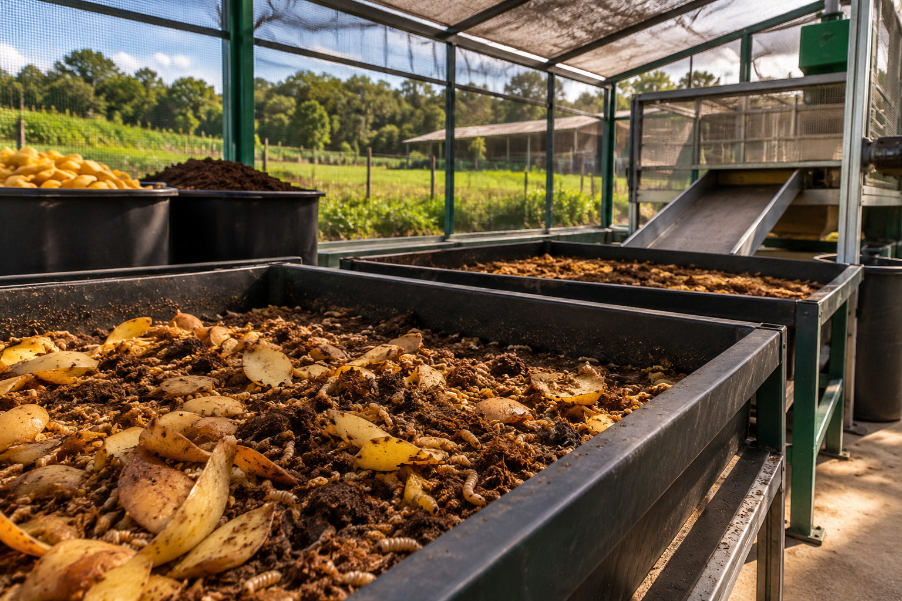
Os resíduos selecionados são direcionados ao módulo de bioconversão. Durante o desenvolvimento, as larvas consomem parte do substrato. Ao atingirem a fase de pré-pupa, podem migrar pelas rampas de auto-colheita, permitindo sua separação.
O material remanescente segue para a etapa de compostagem convencional, com acompanhamento e análises planejadas.
As etapas abaixo apresentam o fluxo proposto para a operação integrada. A sequência poderá ser ajustada conforme os testes, o planejamento de instalação e os resultados das avaliações.
Recepção e identificação dos resíduos orgânicos selecionados.
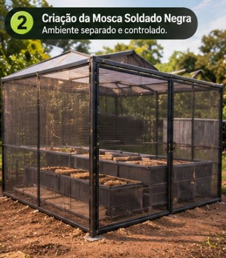
Organização do material para alimentação do sistema.
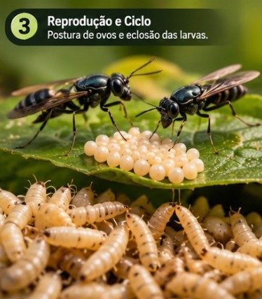
As larvas processam parte da matéria orgânica disponibilizada.
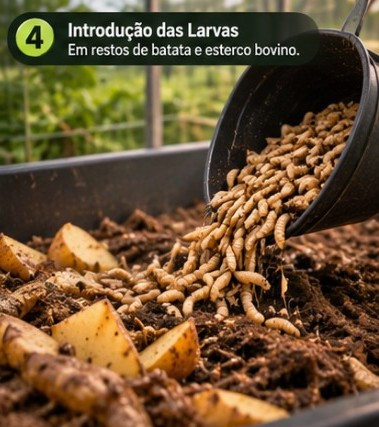
Rampas permitem a migração e a separação das larvas maduras.
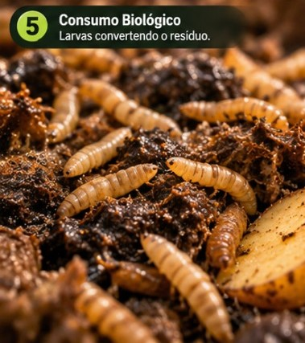
O material segue para a estrutura de compostagem convencional.
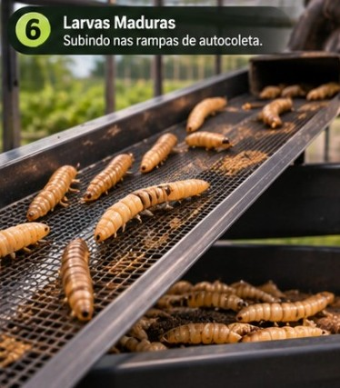
Continuidade do tratamento orgânico conforme o manejo adotado.
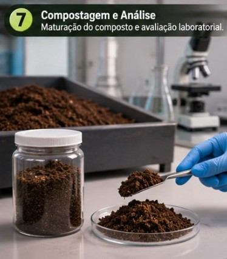
Registro de massa e de características físico-químicas do material.
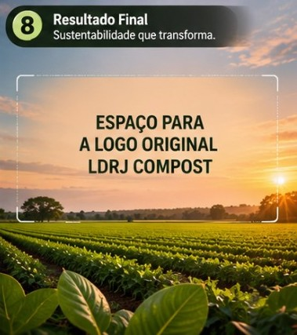
Análises laboratoriais para investigar a qualidade do composto obtido.
Registros e representações visuais organizados para apresentar as etapas do projeto. As imagens identificadas como ilustrativas representam a proposta, não resultados experimentais.
Registro · Etapa 01
Registro · Etapa 02
Registro · Etapa 03
Registro · Etapa 04
Registro · Etapa 05
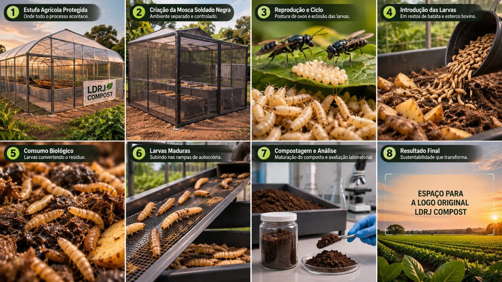
Fluxo integrado · Representação visual
A avaliação será fundamental para verificar o comportamento do processo. Nenhuma eficiência de remoção ou resultado final é considerada comprovada antes da realização e interpretação dos ensaios.
Registrar as massas recebidas, encaminhadas e obtidas em cada etapa.
Acompanhar parâmetros definidos no planejamento laboratorial.
Comparar amostras e investigar os microrganismos de interesse.
O projeto está sendo apresentado na primeira fase da competição. Nesta etapa, o foco do site é comunicar a demanda, a pesquisa, a proposta de solução e o planejamento de desenvolvimento.
A LDRJ COMPOST apresenta uma proposta de inovação aplicada ao aproveitamento de resíduos agroindustriais. O desenvolvimento seguirá conforme os critérios, entregas e orientações oficiais da competição.
Apresentação da demanda, fundamentação, solução proposta e planejamento. A classificação ou aprovação em fases seguintes não é presumida.
LDRJ COMPOST — uma proposta de integração entre bioconversão e compostagem para investigar novos caminhos no aproveitamento de resíduos orgânicos.